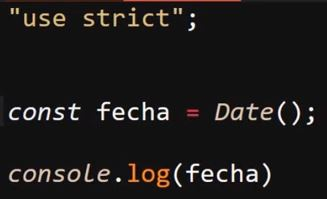
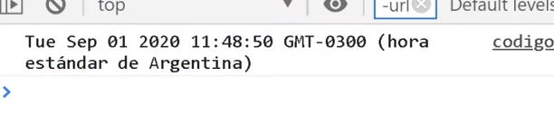
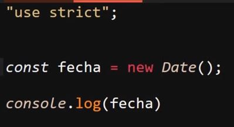
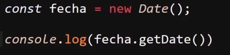
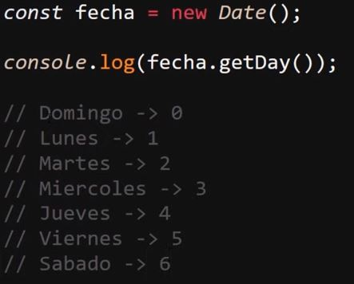
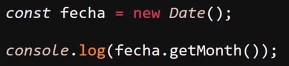
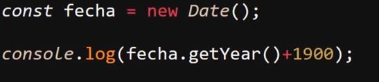
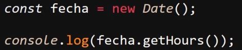
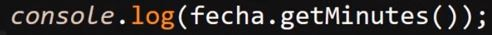

Objeto Date
Se trata de una función nativa de JavaScript la cual cuenta con múltiples métodos para trabajar con la fecha y la zona horaria de la página.
Su uso más básico consiste en obtener la fecha actual del dispositivo; para esto simplemente es necesario utilizar la palabra clave "Date" expresada como una función.
Ejemplo

Resultado

Date() como Constructor
Una particularidad de la función "Date" es que esta también se trata de un constructor, esto ya que hereda tanto sus métodos particulares como los prototipos de objeto, por lo cual en ocasiones se le llama objeto "Date".
Esto se comprueba al utilizar "Date" para generar un objeto:

Con este código se obtiene un resultado en consola que aparenta ser igual al del ejemplo anterior, pero con la diferencia de que este no es solo el resultado de la función, en su lugar se trata de un objeto con todos sus métodos y propiedades.
Para manipular u obtener la fecha de una forma en particular se utilizan los diferentes métodos del objeto "Date", los cuales son:
-
getDate(): Este método retorna el día del mes actual, por ejemplo si la fecha es "22/10/23" este método retorna "22".
Ejemplo

-
getDay(): Este método retorna el día de la semana actual; es importante tener en cuenta que este método trabaja con arrays, por lo tanto el primer día de la semana, el cual es el domingo, tiene el índice "0", el lunes el índice "1" y así sucesivamente.
Por ejemplo, si el día es "jueves", este método retornará "4".
Ejemplo

-
getMonth(): Este método retorna el mes actual y trabaja de la misma forma que el método anterior, es decir, con arrays; por lo tanto, Enero tiene el índice "0", febrero tiene el índice "1" y así sucesivamente.
Ejemplo

-
getYear(): Este método retorna el año actual; sin embargo, lo hace con una particularidad: al año la "api" le resta 1900. Por lo tanto, si el año actual es "2023", el resultado será "123". Lo ideal para obtener el año actual es sumarle 1900 al método para obtener el año exacto.
Ejemplo

-
getHours(): Este método retorna la hora actual del dispositivo:
Ejemplo

-
getMinutes(): Este método retorna los minutos actuales del dispositivo:
Ejemplo

-
getSeconds(): Este método retorna el segundo en el que se cargó la página; por lo tanto, para elaborar un reloj es necesario crear un código que actualice la ejecución de este método:
Ejemplo
Estos son los métodos más básicos del objeto "Date", pero en realidad este posee muchos más, así como parámetros u otras funcionalidades. Todo esto y más se encuentra en el apartado de Mozilla sobre el objeto "Date".
Los parámetros más comunes que se le suelen suministrar a este objeto son fechas particulares; de ese modo, estos datos reemplazarán el resultado de los métodos ya descritos, permitiendo plasmar una fecha en específico en vez de la actual.